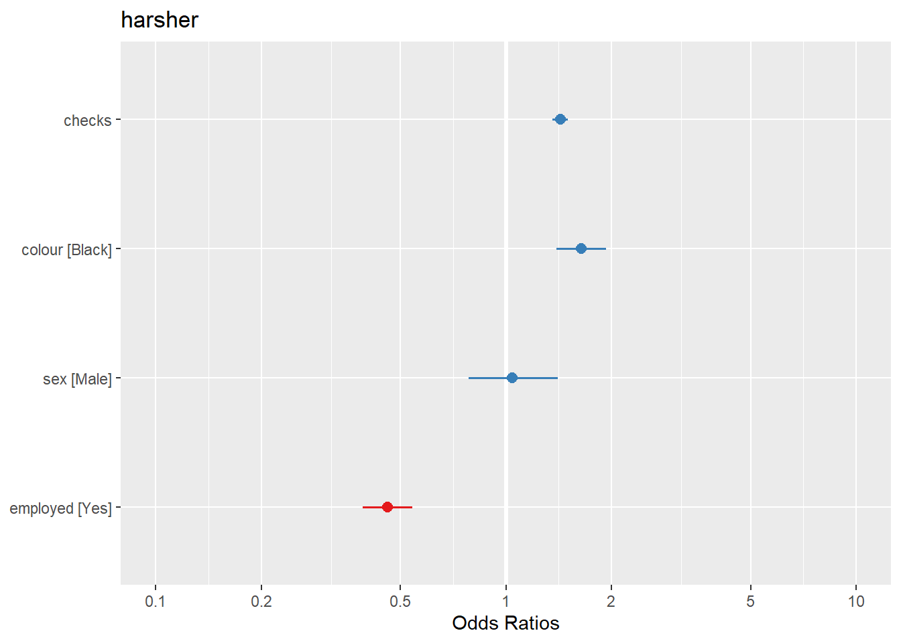
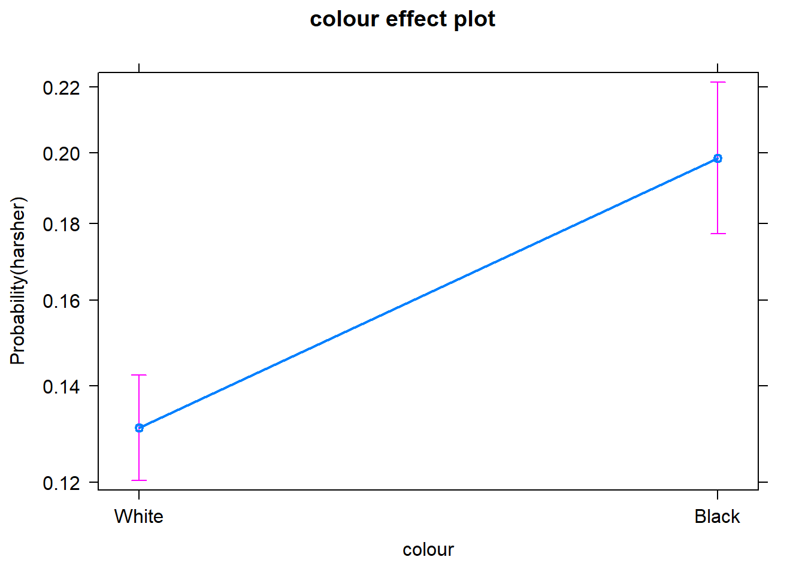
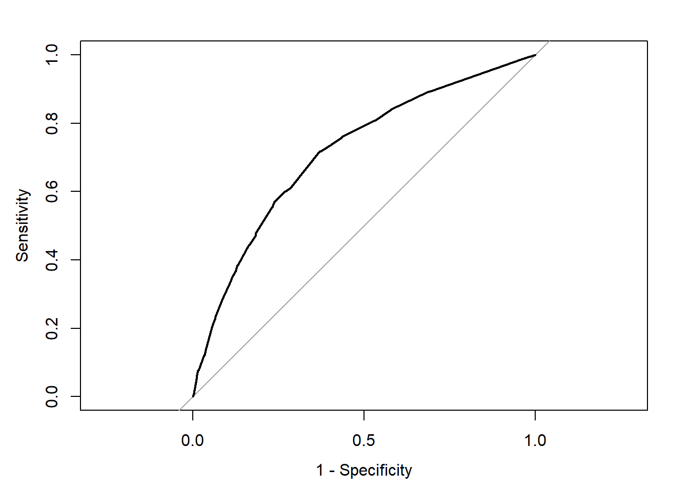
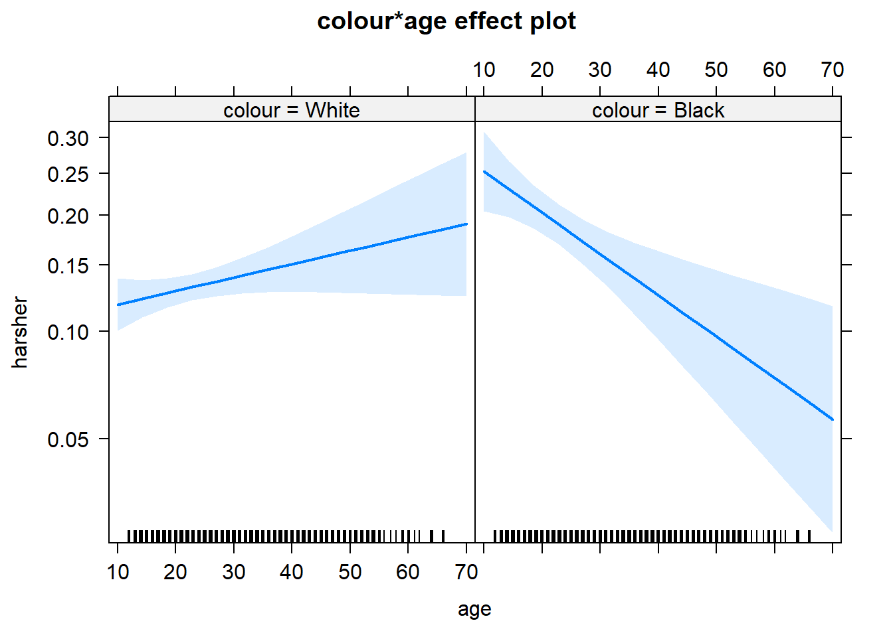

Chapter 9 Logistic regression
9.1 Introduction
In previous sessions we covered the linear regression model, that you can use when you are modeling variation in a numerical response variable. In this session we are going to introduce logistic regression, which is a technique you may use when your outcome or response (or dependent) variable is categorical and has two possible levels.
In criminology, very often you will be interested in binary outcomes (e.g., victim/no victim, arrested/not arrested, etc.) and want to use a number of predictor variables to study these outcomes. It is then, helpful, to understand how to use these models. Logistic regression is part of a broader family of models called generalised linear models. You should read the Wikepedia entry for this concept here.
With logistic regression we are modelling the probability of belonging to one of the levels in the binary outcome. For any combination of values for our predictor variables the model will estimate a probability of presenting the outcome of interest. To fit this model we use maximum likelihood. This handout does not focuses in explaining the mathematics behind the method. Those are important but in this introductory module we only provide an introduction to the technique.
To illustrate logistic regression we are going to use the Arrests data from the effects package. You can obtain details about this dataset and the variables included by using help(Arrests, package="effects"). If you don’t have that package you will need to install it and load it.
## Loading required package: carData## lattice theme set by effectsTheme()
## See ?effectsTheme for details.## Warning in data(Arrests, package = "effects"): data set 'Arrests' not foundThis data includes information on police treatment of individuals arrested in Toronto for possession of marihuana. We are going to model variation on released, a factor with two levels indicating whether the arrestee was released with a summons. In this case the police could:
Release the arrestee with a summons - like a parking ticket
Bring to police station, hold for bail, etc. - harsher treatment
##
## No Yes
## 892 4334We can see that for possession of marijuana most arrestees are released with a summons. Let’s see if we can develop some understanding of the factors that affect this outcome, in particular let’s assume our research goal is to investigate whether race is associated with a harsher treatment. For this we may run a logistic regression model.
9.2 Fitting logistic regression
It is fairly straightforward to run a logistic model. Before you fit it, though, is convenient to check what you are actually modelling. Remember that R orders the levels in a factor alphabetically (unless they have been reordered by the authors of the dataframe). What that means is that when you run logistic regression you will be predicting probabilities associated with the category with a higher alphabetical order.
## [1] "No" "Yes"## Yes
## No 0
## Yes 1If by any chance, the level of interest is not the one that will be selected by R, we will need to reorder the factor levels. In this particular analysis our goal is to check whether being Black predicts harsher treatment. So, let’s reorder the factor in such a way that the model is oriented towards predicting this harsher treatment. This will simply chage the sign of the coefficients and, in that way, may enhance interpretation.
#Reverse the order
Arrests$harsher <- relevel(Arrests$released, "Yes")
#Rename the levels so that it is clear we now mean yes to harsher treatment
levels(Arrests$harsher) <- c("No","Yes")
#Check that it matches in reverse the original variable
table(Arrests$harsher)##
## No Yes
## 4334 892#We will also reverse the order of the "colour"" variable so that the dummy uses Whites as the baseline
Arrests$colour <- relevel(Arrests$colour, "White")We use the glm() function for fitting the model, specifying as an argument that we will be using a logit model (family="binomial"). As stated, we are going to run a model oriented primarily to assess to what degree race/ethnicity seems to matter even when we adjust for other factors (e.g., sex, employment, and previous police contacts (checks: number of police data records of previous arrests, previous convictions, parole status, etc. - 6 in all) on which the arrestee’s name appeared; a numeric vector)).
fitl_1 <- glm(harsher ~ checks + colour + sex + employed, data=Arrests, family = "binomial")
summary(fitl_1)##
## Call:
## glm(formula = harsher ~ checks + colour + sex + employed, family = "binomial",
## data = Arrests)
##
## Deviance Residuals:
## Min 1Q Median 3Q Max
## -1.5226 -0.6156 -0.4407 -0.3711 2.3449
##
## Coefficients:
## Estimate Std. Error z value Pr(>|z|)
## (Intercept) -1.90346 0.15999 -11.898 < 2e-16 ***
## checks 0.35796 0.02580 13.875 < 2e-16 ***
## colourBlack 0.49608 0.08264 6.003 1.94e-09 ***
## sexMale 0.04215 0.14965 0.282 0.778
## employedYes -0.77973 0.08386 -9.298 < 2e-16 ***
## ---
## Signif. codes: 0 '***' 0.001 '**' 0.01 '*' 0.05 '.' 0.1 ' ' 1
##
## (Dispersion parameter for binomial family taken to be 1)
##
## Null deviance: 4776.3 on 5225 degrees of freedom
## Residual deviance: 4330.7 on 5221 degrees of freedom
## AIC: 4340.7
##
## Number of Fisher Scoring iterations: 5The table, as you will see, is similar to the one you get when running linear regression, but there are some differences we will discuss.
The first thing you see in the output printed in the console is the model we run. Then we see something called the deviance residuals, which are a measure of model fit. This part of output shows the distribution of the deviance residuals for individual cases used in the model. Later we discuss how to use summaries of the deviance statistic to assess model fit.
At the very bottom, below the table of coefficients, are fit indices (including the null and deviance residuals and the Akaike information criterion (AIC)). We discuss this later.
The part in the middle of the output shows the coefficients, their standard errors, the statistic, and the associated p-values. The z statistic (sometimes called a Wald z-statistic) does a job similar to the t test in the linear regression model. It is a test of statistical significance assessing whether each input in the model is associated with the dependent variable.
If we focus in the table of coefficients, we can see that all the inputs but sex were significant in the model. The estimates that get printed when you run logistic regression give you the change in the log odds of the outcome for a one unit increase in the predictor. Here we see that for every one unit increase in the number of previous police contacts (checks), the log odds of receiving harsher treatment (versus being released) increases by 0.36 adjusting for the other variables in the model. The reminder variables are categorical predictors with two levels. So what we see is the coefficient for the dummy variables indicating the contrast with their respective baseline or reference category. So, for example, being Black increases the log odds of receiving harsher treatment by 0.49, whereas being employed decreases the log odds of being released by 0.77. As mentioned above, the coefficient for gender was not significant. What are log odds? We will discuss this in a bit.
We can also use the confint() function to obtain confidence intervals for the estimated coefficients.
## Waiting for profiling to be done...## 2.5 % 97.5 %
## (Intercept) -2.2241433 -1.5962775
## checks 0.3075891 0.4087441
## colourBlack 0.3334415 0.6574559
## sexMale -0.2445467 0.3429244
## employedYes -0.9436356 -0.6148518So what does that actually mean?
Interpreting in the log odds scale is something some people do not find very intuitive. So it is common to use odd ratios when interpreting logistic regression. We have already covered odd ratios when discussing cross tabulations. To do this, all we need to do is to exponentiate the coefficients. To get the exponentiated coefficients, you tell R that you want to exponentiate (exp()), that the object you want to exponentiate is called coefficients and it is part of the model you just run.
## (Intercept) checks colourBlack sexMale employedYes
## 0.1490516 1.4304108 1.6422658 1.0430528 0.4585312You can use the same logic to the confindence intervals.
## Waiting for profiling to be done...## OR 2.5 % 97.5 %
## (Intercept) 0.1490516 0.1081600 0.2026495
## checks 1.4304108 1.3601419 1.5049266
## colourBlack 1.6422658 1.3957633 1.9298763
## sexMale 1.0430528 0.7830594 1.4090622
## employedYes 0.4585312 0.3892103 0.5407210Now we can use the interpretation of odd ratios we introduced in a previous session. When the odd ratio is greater than 1 indicates that the odds of receiving harsher treatment increases when the independent variable increases. We can say, for example, that previous police contacts increases the odds of harsher treatment by 43% whereas being black increases the odds of harsher treatment by 64% (while adjusting for the other variables in the model).
Employment has an odd ratio of 0.45. When the odd ratio is between 0 and 1 is indicating a negative relationship. So employment reduces the odds of harsher treatment by 1/0.46, that is by a factor of 2.18. For more details interpreting odd ratios in logistic regression you may want to read this. Some people do not like odd ratios. For other ways of interpreting logistic regression coefficients you may want to consult chapter 5 of the book by Gelman and Hill (2007).
You can read more about how to read odd ratios in logistic regression here.
Another way of getting the results with less typing is to use the Logit() function in the lessR package (you will need to install it if you do not have it).
##
## lessR 3.9.0 feedback: gerbing@pdx.edu web: lessRstats.com/new
## ---------------------------------------------------------------------
## 1. d <- Read("") Read text, Excel, SPSS, SAS or R data file
## d: default data frame, no need for data=
## 2. l <- Read("", var_labels=TRUE) Read variable labels into l,
## required name for data frame of labels
## 3. Help() Get help, and, e.g., Help(Read)
## 4. hs(), bc(), or ca() All histograms, all bar charts, or both
## 5. Plot(X) or Plot(X,Y) For continuous and categorical variables
## 6. by1= , by2= Trellis graphics, a plot for each by1, by2
## 7. reg(Y ~ X, Rmd="eg") Regression with full interpretative output
## 8. style("gray") Grayscale theme, + many others available
## style(show=TRUE) all color/style options and current values
## 9. getColors() create many styles of color palettes
##
## lessR parameter names now use _'s. Names with a period are deprecated.
## Ex: bin_width instead of bin.width##
## Response Variable: harsher
## Predictor Variable 1: checks
## Predictor Variable 2: colour
## Predictor Variable 3: sex
## Predictor Variable 4: employed
##
## Number of cases (rows) of data: 5226
## Number of cases retained for analysis: 5226
##
##
##
## BASIC ANALYSIS
##
## Model Coefficients
##
## Estimate Std Err z-value p-value Lower 95% Upper 95%
## (Intercept) -1.9035 0.1600 -11.898 0.000 -2.2170 -1.5899
## checks 0.3580 0.0258 13.875 0.000 0.3074 0.4085
## colourBlack 0.4961 0.0826 6.003 0.000 0.3341 0.6580
## sexMale 0.0422 0.1496 0.282 0.778 -0.2511 0.3355
## employedYes -0.7797 0.0839 -9.298 0.000 -0.9441 -0.6154
##
##
## Odds ratios and confidence intervals
##
## Odds Ratio Lower 95% Upper 95%
## (Intercept) 0.1491 0.1089 0.2039
## checks 1.4304 1.3599 1.5046
## colourBlack 1.6423 1.3967 1.9310
## sexMale 1.0431 0.7779 1.3986
## employedYes 0.4585 0.3890 0.5404
##
##
## Model Fit
##
## Null deviance: 4776.258 on 5225 degrees of freedom
## Residual deviance: 4330.699 on 5221 degrees of freedom
##
## AIC: 4340.699
##
## Number of iterations to convergence: 5
##
##
##
##
## >>> Note: colour is not a numeric variable.
##
##
##
## >>> Note: sex is not a numeric variable.
##
##
##
## >>> Note: employed is not a numeric variable.
##
## Collinearity
##
##
## >>> No collinearity analysis because not all variables are numeric.As with linear regression, the interpretation of regression coefficients is sensitive to the scale of measurement of the predictors. This means one cannot compare the magnitude of the coefficients to compare the relevance of variables to predict the response variable. The same applies to the odd ratios. Tempting and common as this might be, unless the predictors use the same metric (or maybe if they are all categorical) there is little point in comparing the magnitude of the odd ratios in logistic regression. Like the unstardised logistic regression coefficients odd ratios are not a measure of effect size that allows comparisons across inputs (Menard, 2012).
Finally, you could, in the same way than we did in a previous session, use the standardize() function from the arm package.
## Loading required package: MASS## Loading required package: Matrix## Loading required package: lme4##
## arm (Version 1.10-1, built: 2018-4-12)## Working directory is D:/Dropbox/1_Teaching/1 Manchester courses/20452 Modelling Criminological Data/modelling_book## glm(formula = harsher ~ z.checks + c.colour + c.sex + c.employed,
## family = "binomial", data = Arrests)
## coef.est coef.se
## (Intercept) -1.77 0.04
## z.checks 1.10 0.08
## c.colour 0.50 0.08
## c.sex 0.04 0.15
## c.employed -0.78 0.08
## ---
## n = 5226, k = 5
## residual deviance = 4330.7, null deviance = 4776.3 (difference = 445.6)We can also use forest plots in much the same way than we did for linear regression. One way of doing this is using the plot.model() function of the sjPlot package. Notice that by default the odd ratios are sorted from higher to lower in this display (and also that in this html file the text in the plot is not fully displayed, I’m still trying to fix that, but if you run this and zoom in you will see it better).
## Learn more about sjPlot with 'browseVignettes("sjPlot")'.
Equally, we can produce effect plots using the effects package:

Effect plots in this context are particularly helpful because they summarise the results using probabilities, which is what you see plotted in the y axis.
We don’t have to print them all. When we are primarily concerned with one of them, as in this case, that’s the one we want to emphasise when presenting and discussing our results. There isn’t much point discussing the results for the variables we simply defined as control (given what our research goal was). So in this case we would ask for the plot for our input measuring race/ethnicity:

We can use the predict() function to generate the predicted probability that the arrestess will be released given what we know about their inputs in the model, given values of the predictors. By default R will compute the probabilities for the dataset we fitted the model to. Here we have printed only the first ten probabilities, but the way we use the predict() function here will generate a predicted probability for each case in the dataset.
fitl_1_prob <- predict(fitl_1, type = "response") #If you want to add this to your dataframe you could designate your object as Arrests$fitl_1_prob
fitl_1_prob[1:10]## 1 2 3 4 5 6 7
## 0.17262268 0.25519856 0.17262268 0.14344103 0.13833944 0.10091376 0.13455033
## 8 9 10
## 0.08905504 0.32891111 0.17262268It is important to understand that with this type of models we usually generate two types of predictions. One the one hand, we are producing a continuous valued prediction in the form of a probability but we can also generate a predicted class for each case. In many applied settings, the latter will be relevant. A discrete category prediction may be required in order to make a decision. Imagine of a probation officer evaluating the future risk of a client. She/He would want to know whether the case is high risk or not.
9.3 Assessing model fit I: deviance and pseudo r squared
As you may remember when looking at linear models we could use an F test to check the overall fit of the model and we could evaluate R squared. When running logistic regression we cannot obtain the R squared (although there is a collection of pseudo-R^2 measures that have been produced). In linear regression things are a bit simpler. As Menard (2010: 43) explains:
“there is only one reasonable residual variation criterion for quantitative variables in OLS, the familiar error sum of squares… but there are several possible residual variation criteria (entropy, squared error, qualitative difference) for binary variables. Another hindrance is the existence of numerous mathematical equivalents to R^2 in OLS, which are not necessarily mathematically (same formula) or conceptually (same meaning in the context of the model) equivalent to R^2 in logistic regression… Moreover, in logistic regression, we must choose whether we are more interested in qualitative prediction (whether predicitons are correct or incorrect), quantitative prediction (how close predictions are to being correct), or both, because different measures of explained variation are appropriate for these two different types of prediction”
A common starting point for assessing model fit is to look at the log-likelihood statistic and the deviance (also referred to as -2LL).
The log likelihood aims to provide a measure of how much unexplained variation there is after you fit the mode. Large values indicate poor fit.
The deviance, on the other hand, is simply the log likelihood multiplied by -2 and is generally abbraviated as -2LL. The deviance will be a positive value and larger values indicate worse prediction of the response variable. It is analogous to the error sum of squares in linear regression. In the same way that OLS linear regression tries to minimise the error sum of squares, maximim likelihood logistic regression tries to minimise the -2LL.
The difference between the -2LL for the model with no predictors and the -2LL for the model with all the predictors is the closer we get in logistic regression to the regression sum of squares. This difference is often called model chi squared. And it provides a test of the null hypothesis that all the regression coefficients equal zero. It is, thus, equivalent to the F test in OLS regression.
##
## Call:
## glm(formula = harsher ~ checks + colour + sex + employed, family = "binomial",
## data = Arrests)
##
## Deviance Residuals:
## Min 1Q Median 3Q Max
## -1.5226 -0.6156 -0.4407 -0.3711 2.3449
##
## Coefficients:
## Estimate Std. Error z value Pr(>|z|)
## (Intercept) -1.90346 0.15999 -11.898 < 0.0000000000000002
## checks 0.35796 0.02580 13.875 < 0.0000000000000002
## colourBlack 0.49608 0.08264 6.003 0.00000000194
## sexMale 0.04215 0.14965 0.282 0.778
## employedYes -0.77973 0.08386 -9.298 < 0.0000000000000002
##
## (Dispersion parameter for binomial family taken to be 1)
##
## Null deviance: 4776.3 on 5225 degrees of freedom
## Residual deviance: 4330.7 on 5221 degrees of freedom
## AIC: 4340.7
##
## Number of Fisher Scoring iterations: 5In our example, we saw that some measures of fit were printed below the table with the coefficients. The null deviance is the deviance of the model with no predictors and the residual deviance is simply the deviance for this model. You clearly want the residual deviance to be smaller than the null deviance. The difference between the null and the residual deviance is what we called the model chi squared. In this case this is 4776.3 minus 4330.7. We can ask R to do this for us.
First, notice that the object we created has all the information we need already stored.
## [1] "coefficients" "residuals" "fitted.values"
## [4] "effects" "R" "rank"
## [7] "qr" "family" "linear.predictors"
## [10] "deviance" "aic" "null.deviance"
## [13] "iter" "weights" "prior.weights"
## [16] "df.residual" "df.null" "y"
## [19] "converged" "boundary" "model"
## [22] "call" "formula" "terms"
## [25] "data" "offset" "control"
## [28] "method" "contrasts" "xlevels"So we can use this stored information in our calculations.
## [1] 445.5594Is 445.6 small? How much smaller is enough? This value has a chi square distribution and its significance can be easily computed. For this computation we need to know the degrees of freedom for the model (which equal the number of predictors in the model) and can be obtained like this:
## [1] 4Finally, the p-value can be obtained using the following code to invoke the Chi Square distribution:
#When doing it yourself, this is all you really need (we present the code in separate fashion above to that you understand better what the one here does)
with(fitl_1, pchisq(null.deviance - deviance, df.null - df.residual, lower.tail = FALSE))## [1] 3.961177e-95We can see that the model chi square is highly significant. Our model as a whole fits significantly better than a model with no predictors.
Menard (2010) recommends to also look at the likelihood ratio R^2 that can be calculated as the difference between the null deviance and the residual deviance, divided by the null deviance.
## [1] 0.09328629Some authors refer to this as the Hosmer/Lemeshow R^2. It indicates how much the inclusion of the independent variables in the model reduces variation, as measured by the null deviance. It varies between 0 (when our prediction is catastrophically useless) and 1 (when we predict with total accuracy). There are many other pseudo R^2 measures that have been proposed, but Menard based on research on the properties of various of these measures recommends the likelihood ratio R^2 because:
It is the one with a closer conceptual link to R^2 in OLS regression.
It does not appear to be sensitive to the base rate (the proportion of cases that have the attribute of interest) of the phenomenon being studied and therefore will work even in cases with unbalanced probabilities.
It varies between 0 and 1
And it can be used in other generalised linear models (models for categorical outcomes with more than two levels, which we don’t cover here)
9.4 Assessing model fit II: confusion matrix and ROC curves
If we are interested in “qualitative” prediction, we also need to consider other measures of fit. In many applied settings, such as in applied predictive modelling, this can be the case. Imagine you are developing a tool to be used to forecast the probability of a repeat victimisation in cases of domestic violence. This type of prediction may then be used to determine the type of police response to cases defined as high risk. Clearly, you want to make sure the classification you make is accurate as possible. For these and similar applications in which qualitative prediction is important, we use other type of measures.
In these contexts is common to start from a classification table or confusion matrix. A confusion matrix is simply a cross tabulation of the observed outcome in relation to the predicted outcome. We saw earlier how the predict() function generated a set of predicted probabilities for each of the subjects in the study. In order to produce a classification table in this context we need to define a cut-off point, a particular probability that we will use in classifying cases. Anybody above that cut-off we will define as belonging to the level of interest and anybody below we will define as not. We could, for example, say that anybody with a probability larger than .5 should be predicted to receive harsher treatment.
The confusion matrix typically follows this layout:

confusion
The diagonal entries correspond to observations that are classified correctly according to our model and our cut off point whereas the off-diagonal entries are misclassifications. False negatives are observations that were classified as zeros but turned out to be ones (the outcome of interest). False positives are observations that were classified as ones (the outcome of interest) but turned out to be zeros.
There are various ways of producing a confusion matrix in R. The most basic one is to simply ask for the cross-tabulation of the predicted classes (determined by the cut-off criterion) versus the observed classes.
#First we define the classes according to the cut-off
fitl_1_pred_class <- fitl_1_prob > .5
#This creates a logical vector that returns TRUE when the condition is met (the subject is predicted to be released) and FALSE when the condition is not met (harsher treatment was delivered)
fitl_1_pred_class[1:10]## 1 2 3 4 5 6 7 8 9 10
## FALSE FALSE FALSE FALSE FALSE FALSE FALSE FALSE FALSE FALSE#Let's make this into a factor with the same levels than the original variable
harsher_pred <- as.factor(fitl_1_pred_class)
levels(harsher_pred) <- c("No","Yes")
table(harsher_pred)## harsher_pred
## No Yes
## 5113 113##
## harsher_pred No Yes
## No 4278 835
## Yes 56 57From classification tables we can derive various useful measures. Two important ones are the sensitivity and the specificity. The sensitivity of the model is the rate that the event of interest (e.g., receiving harsher treatment) is predicted correctly for all cases having the event.
Sensitivity = number of cases with the event and predicted to have the event / number of samples actually presenting the event
In this case this amount to 57 divided by 835 plus 57. The sensitivity is sometimes also considered the true positive rate since it measures the accuracy in the event populaiton. On the other hand, the specificity is defined as:
Specificity = number of cases without the events and predicted as non-events / number of cases without the event
In this case this amount to 4278 divided by 4278 plus 56. The false positive rate is defined as one minus the specificity.
From the table we produced we can generate these measures automatically. For this sort of things, however, I prefer to go straight to the confusionMatrix() function from the caret package since it produces a very detailed set of calibration measures that are helpful indicators of how well the model is classifying.
## Loading required package: lattice## Loading required package: ggplot2## Confusion Matrix and Statistics
##
## Reference
## Prediction No Yes
## No 4278 835
## Yes 56 57
##
## Accuracy : 0.8295
## 95% CI : (0.819, 0.8396)
## No Information Rate : 0.8293
## P-Value [Acc > NIR] : 0.4943
##
## Kappa : 0.078
##
## Mcnemar's Test P-Value : <0.0000000000000002
##
## Sensitivity : 0.06390
## Specificity : 0.98708
## Pos Pred Value : 0.50442
## Neg Pred Value : 0.83669
## Prevalence : 0.17069
## Detection Rate : 0.01091
## Detection Prevalence : 0.02162
## Balanced Accuracy : 0.52549
##
## 'Positive' Class : Yes
## We can see first the accuracy. The overall accuracy rate gives us the agreement between the observed and predicted classes. However, the overall accuracy is often not the most useful measure. Kappa is also a measure that is often used with values ranging between 0.30 to 0.50 considered to indicate reasonable agreement. But for many applications will be of interest to focus on the sensitivity and the specificity as defined above. In this case, we can see that our sensitivity, or the true positive rate, is very poor. And so it is the Kappa. Clearly the model has problems predicting harsh treatment with the select cut off.
One of the problems with taking this approach is that the choice of the cut off point can be arbitrary and yet, this cut off point will impact the sensitivity and specificity of the model. There is a trade-off between sensitivity and specificity. Given a fixed accuracy, more of one will result in less of the other.
So if we use a different cut off point, say .25, the classification table would look like this:
precision<-function(c) {
tab1 <- table(fitl_1_prob>c, Arrests$harsher)
out <- diag(tab1)/apply(tab1, 2, sum)
names(out) <- c('specificity', 'sensitivity')
list(tab1, out)
}
precision(.25)## [[1]]
##
## No Yes
## FALSE 3627 496
## TRUE 707 396
##
## [[2]]
## specificity sensitivity
## 0.8368713 0.4439462Here we are predicting as receiving harsher treatment anybody with a probability above .25 of doing so according to our model. Our sensitivity goes up significantly, but our specificity goes down. You can see that the cut off point will affect how many false positives and false negatives we have. With this cut off point we will be identifying many more cases as presenting the outcome of interest when in fact they won’t present it (707 as oppose to 56 when using a cut off of .5). On the other hand, we have improved the sensitivity and now we are correctly identifying as positives 396 cases as opposed to just 57 cases). The overall accuracy is still the same but we have shifted the balance between sensitivity and specificity.
Potential trade offs here may be appropriate when there are different penalties or costs associated with each type of error. For example, if you are trying to predict a homicide as part of an intervention or prevention program you may give more importance to not making a false negative error. That is you want to identify as many potential homicide victims as possible, even if that means that you will identify as victims individuals that in the end won’t be (false positives). On the other hand, if you have limited resources to attend all the cases that you will predict as positives you also need to factor this into the equation. You don’t want to use a cut off point that will lead you to identify more cases as potential homicide victims that you can possibly work with.
Similarly, if you think about the criminal justice system, it is essentially built around the idea of avoiding false positives - that is convicting people who are innocent. You will have heard many phrases like “innovent until proven guilty” or “It is far better that 10 guilty men go free than one innocent man is wrongfully convicted”. This approach would incline us to err on the side of false negatives, and avoid false positives (higher sensitivity, lower specificity).
We may want to see what happens to sensitivity and specificity for different cut off points. For this we can look at receiver operating characteristics or simply ROC curves. This is essentially a tool for evaluating the sensitivity/specificity trade off. The ROC curve can be used for investigating alternate cut offs for class probabilities.
We can use the pROC package for this. We start by creating an object that contains the relevant information with the roc() function form t the pROC package.
## Type 'citation("pROC")' for a citation.##
## Attaching package: 'pROC'## The following objects are masked from 'package:stats':
##
## cov, smooth, var## Setting levels: control = No, case = Yes## Setting direction: controls < casesOnce we have the object with the information, we can plot the ROC curve.

We can see the trajectory of the curve is at first steep, suggesting that sensitivity increases at a greater pace than the decrease in specificity. However we then reach a point at which specificity decreases at a greater rate than the sensitivity increases. If you want to select a cut off that gives you the optimal cut off point you can use the coords() function of the pROC package. You can pass arguments to this function so that it returns the best sum of sensitivity and speficitity.
alt_cutoff1 <- coords(rocCURVE, x = "best", best.method = "closest.topleft")
#The x argument in this case is selecting the best cut off using the "closest topleft" method (which identifie the point closest to the top-left part of the plot with perfect sensitivity or specificity). Another option is to use the "youden" method in the best.method argument.
alt_cutoff1## threshold specificity sensitivity
## 1 0.1696539 0.6305953 0.7163677Here we can see that with a cut off point of .16 we get a specificity of .63 and a sensitivity of .71. Notice how this is close to the base rate of harsher treatment in the sample (17% of individuals actually received harsher treatment). For a more informed discussion of cut off points and costs of errors in applied predictive problems in criminal justice, I recommend reading Berk (2012). Often the selection of cut off may be motivated by practical considerations (e.g., selecting individuals for treatment in a situation where resources to do so is limited).
The ROC curve can also be used to develop a quantitative assessment of the model. The perfect model is one where the curve reaches the top left corner of the plot. This would imply 100% sensitivity and specificity. On the other hand, a useless model would one with a curve alongside the diagonal line splitting the plot in two, from the bottom right corner to the top right corner. You can also look at the area under the curve (AUC) and use it to compare models. An AUC of .5 correspond to the situation where our predictors have no predictive utility. For a fuller discussion of how to compare these curves and the AUC I recommend reading Chapter 11 of Kuhn and Johnson (2014).
9.5 Interactions
The data we have been using were obtained by the author of the effects package from Michael Friendly, another prominent contributor to the development of R packages. The data are related to a series of stories revelaed by the Toronto Star and further analysed by Professor Friendly as seen here. In these further analysis Friendly proposes a slightly more complex model than then one we have specified so far. This model adds three new predictors (citizenship, age, and year in which the case was processed) and also allows for interactions between race (colour) and year, and race and age.
fitl_2 <- glm(harsher ~ employed + citizen + checks + colour * year + colour * age, family = binomial, data = Arrests) #Notice this different way of including interactions
summary(fitl_2)##
## Call:
## glm(formula = harsher ~ employed + citizen + checks + colour *
## year + colour * age, family = binomial, data = Arrests)
##
## Deviance Residuals:
## Min 1Q Median 3Q Max
## -1.7625 -0.6178 -0.4408 -0.3473 2.4496
##
## Coefficients:
## Estimate Std. Error z value Pr(>|z|)
## (Intercept) -134.187783 69.287702 -1.937 0.052785
## employedYes -0.747475 0.084601 -8.835 < 0.0000000000000002
## citizenYes -0.620159 0.105164 -5.897 0.0000000037
## checks 0.364718 0.025949 14.055 < 0.0000000000000002
## colourBlack 361.668318 115.180289 3.140 0.001689
## year 0.066318 0.034664 1.913 0.055722
## age 0.009347 0.005495 1.701 0.088979
## colourBlack:year -0.180225 0.057604 -3.129 0.001756
## colourBlack:age -0.038134 0.010161 -3.753 0.000175
##
## (Dispersion parameter for binomial family taken to be 1)
##
## Null deviance: 4776.3 on 5225 degrees of freedom
## Residual deviance: 4275.0 on 5217 degrees of freedom
## AIC: 4293
##
## Number of Fisher Scoring iterations: 5What we see here is that the two interactions included are significant. To assist interpretation of interactions is helpful to look at effect plots.

First we see that up to 2000, there is strong evidence for differential treatment of blacks and whites. However, we also see evidence to support Police claims of effect of training to reduce racial effects.

On the other hand, we see a significant interaction between race and age. Young blacks are treated more harshly than young whites. But older blacks treated less harshly than older whites.
We already discussed in a previous session the difficulties of interpreting regression coefficients in models with interactions. Centering and standardising in the way discussed earlier can actually be of help or this purpose.
9.6 HOMEWORK:
Run a logistic regression model using the BCS0708 data from previous weeks and develop a model that aims to predict victimisation with at least 5 explanatory variables. Interpret your results
9.7 Further resources
These are a set of useful external resources that may aid your comprehesion (and I have partly relied upon myself, so credit to them!):
A set of explanatory notes by Jack Weiss at the University of North Carolina. Check lesson 20 and 21. I really like the look of his whole course.
The UCLA guide to using logistic regression with R.
A helpful list of resources for general linear models with R.
#Wrapping up
It is the final week, so let me start with some general reflections to wrap up the unit. I know some of you may think, why the hell am I learning code and stats? You may think the contents of this course may ultimately not be of direct benefit to you. But we have designed this experience in such a way that you also acquire a set of skills and tools to learn how to confront tough problems (even those you may think you hate). Life will throw many of those kind of problems at your door. Having survived this module, we believe may have also teach you a thing or two about the importance of task persistence; overcoming your frustration in order to obtain results; dealing with your own insecurites and the understandable emotions they generate; being more organised about your work; collaborate with others in the same situation; the importance of attention to detail; etc. Hopefully we may have also helped you to develop a greater sense of curiosity and to achieve the inmense satisfaction one gets when one cracks a tough problem that may have had us screaming at the computer screen for what may have felt like hours. We know a course like this may get you out of your comfort zone. But we firmly believe that it is worth it. And that you will get something out of it, even if now may not be terribly obvious to you.
And with that, let’s move to this final session. We are not going to cover new techniques today. What there may be a few tips about presentation that you may find helpful. The document in Blackboard about how to write your analytical report is quite detailed already. But there a few additional tips you may find helpful.
##Tips for the assignment
You should all now be familiar with the assignment you have to do. In the Blackboard page for this course unit you can obtain the essay question and additional guidance we have prepared. You can see as well here. This guidance aims to answer most of the questions about what you need to do and how. It is very detailed and it has been built with the feedback from the many students that have taken this module before. That guidance aims to provide you a helping hand during the process. It also includes a file in how to think about the writing of your essay -see here.
Critically you have never written anything like this before so it is normal to have questions. It may help you to read any article in any of the top journals in our field such as Criminology, the Journal of Research in Crime and Delinquency, or if you like “hard drugs” the Journal of Quantitative Criminology to get an idea of the templates that criminologists follow when writing a research report. Looking at good templates such as the ones you will encounter in those journals will give you good ideas about how to tell your story. Keep in mind those journal articles are subject to a more generous word count than you will have here, so you will have to be even more succint and parsimonious. If you are spoiled by choice and hesitant about which paper to choose, have a look at this one by Chris Melde and Finn Esbensen from 2009.
For any additional questions you can follow the sequential 5 “Bs” approach designed to enhance autonomy that primary schools follow these days: brain, book, board, buddy, boss. Start with the first and move to the next one if you get stuck.

- Brain: “Do you already know the answer or is this something you can decide for yourself?”
- Book: “Can I look back through my learning materials and find the answer there?”
- Board: “Is the answer in the discussion board?”
- Buddy: “Can one of my peers answer this question?” (if unconvinced by their answer you can move to the next B)
- Boss: “If I have tried all the other Bs, then I can put up my hand but continue working” (and remember here you should first try to ask in the discussion board or the labs, and failing that make an appointment through office hours)
A scientific report, like the one you are tasked to write, needs to be clear, well justified, and very efficient in the use of space. It will be helpful you finish ahead of time and dedicate some time simply to edit your final essay. This is, in fact, a general piece of advice for any essay you write. But in this case perhaps matters more. You will have done loads of things as part of your analysis, but will have very limited word count to tell the story of your analysis. Every word and every sentence must be needed. There is always a shorter and more parsimonious way of saying something! And, please, use the spelling editors of whatever app you use to write your essays. It is not cool to send essays with typos and grammar errors that any app can automatically detect these days.
Here I am just going to cover a few things you can do to make this presentation a bit more succint and parsimonious.
##Summarising your variables
The paper by Melde and Esbensen (2009) cited above provides an example of how you may want to describe in the text your variables. As noted you may not have as much space to get into so much detail, but the core idea you need to take home is that the reader needs to know what variables you are using and how they are measured. You will also need to provide a succint summary of the descriptive measures for your variables. Look at this paper by Andromachi Tseloni and Christina Zarafonitou (2008). Below I reproduce a table from the pre-print version of this article with a summary of the variables they are using in their analysis:

This is a very succint way of describing the distribution of your variables when all are categorical. If you happen to have quantitative variables as well you could, for example, add another column with the mean and the standard deviation (the latter enclosed in brackets) -which would only have this information for your quantitative variables.
Notice that this table has minimum amount of ink and only lines separating cells when absolutely necessary. If you are uncertain how to modify the default tables your word editor uses, this file gives you some tips in how to do with with MS Word. It will be fairly similar with other apps.
Notice as well that information about the total sample size is provided. Remember what we cover in the end of section 4.9!
As we have said we want you to look at whether your variables are associated before you run your multiple regression model. We do this so that we can evaluate if you have learnt how to choose the right tests and measures of effect size.

Above I am reproducing an example of how you could do this. The example assumes you have a categorical dependent variable with four different categories (non-gang, gang only at T1, etc.). You can see how in this table the categories define the column (there is also one for the total sample, if you have something like this you are essentially providing also the summary descriptives for the whole). You can see that the rows define the levels for two categorical variables (gender and race/ethnicity) and two quantitative variables (age and a score for crime). For the categorical variables we have the appropriate percentages (as discussed in week 7) and for the quantitative variables we have the means and standard deviations. Remember how you set this table may differ depending the nature of your variables, but hopefully you get the idea. You can find a way to summarise the information. You could add a column to a table like this with the p values for your statistical tests (somehow indicating what that test was: chi square, F, etc.). Then you could discuss the more relevant of this in the narrative discussing your table.
##Some final words
So, this is the end. At least for now. What we have done this semester is an introduction to the field of data analysis. But there is so much more to it. If you are planning a scientific career or want to work as an analyst in the private or public sector, the journey is just beginning. You could take some choices in the final year to continue this journey. There are some options within our degree (like Crime Mapping or the Quantitative Seconday Analysis Short Dissertation pathway, one of the possible modalities as the Short Dissertation). You could also take options in other degrees within the School of Social Science, our new home, that also have a focus on quant analysis (we can advise on these). After that you may want to think about our MRes in Criminology (Social Statistics), which focuses on quant analysis as part of the criminology track. You can see details here.
But there are many free courses offered as massive online open courses that you could take to consolidate or further expand what you have learnt this semester. Check out Coursera or edX platforms for these. Many of those courses make you pay for a certificate (and if you want to get feedback), but you can watch the videos and use the materials for free in almost all of them. You may also want to have a look at datacamp. Most of their courses require a paid subscription, but there are many courses for free (particularly those created by the community).
Good luck with the essays!!! And do not hesitate to get in touch if you have any queries.